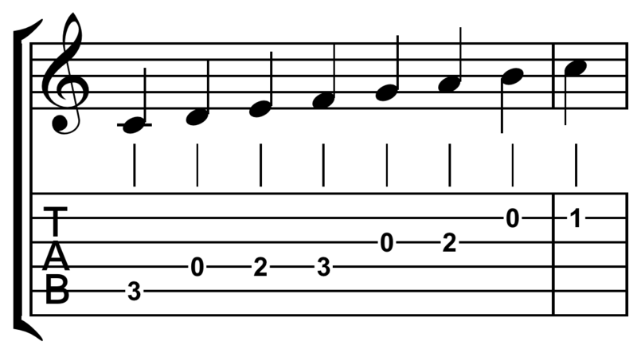
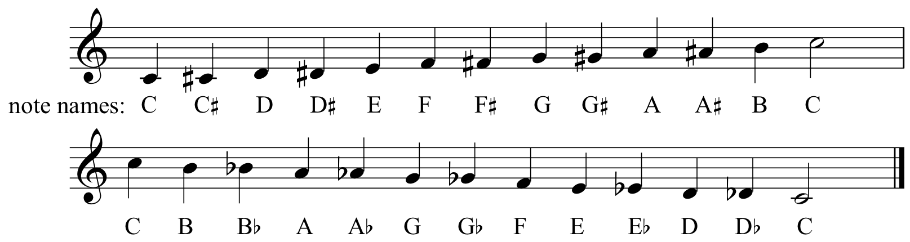
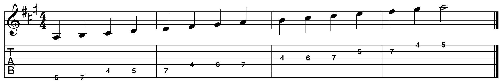
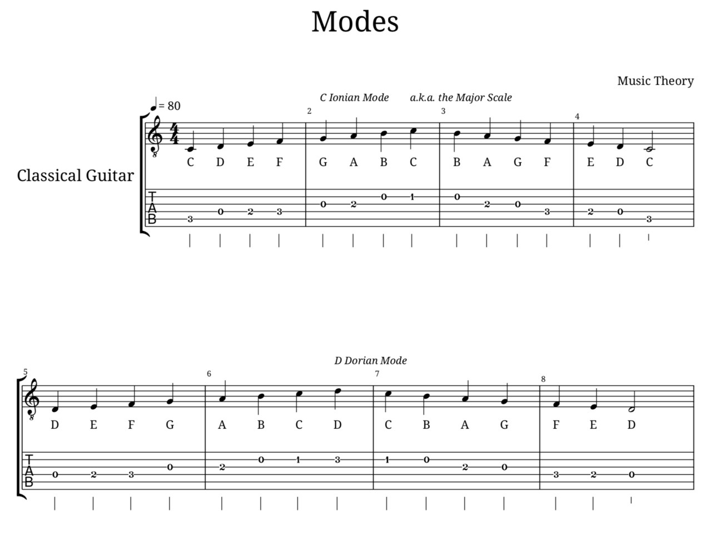
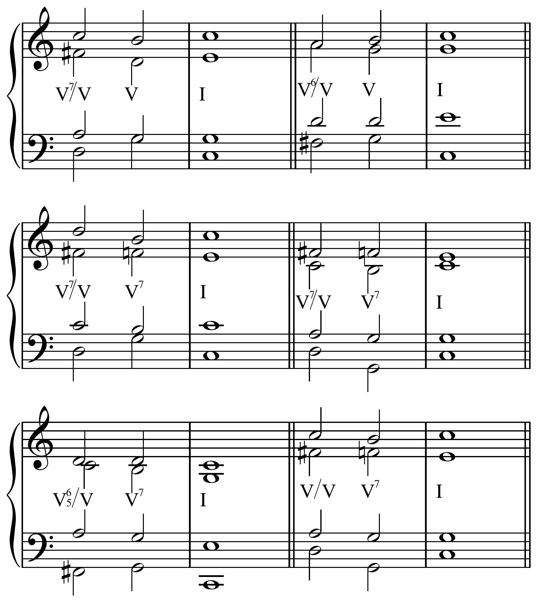
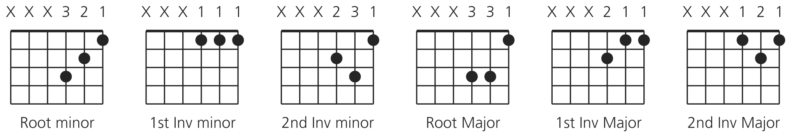
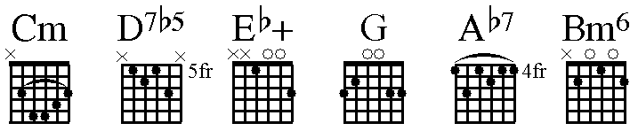

A brief overview of the fundamentals to music theory.
Fundamentals
Notes
A note is a musical tone.
It is a term used acrossed all instruments, and the way a note is used and expressed is what makes up all aspects of music.
The notes used are C-D-E-F-G-A-B. They can be sharp(#) or flat(b), which raises or lowers them by a half-step, respectively.
Particularly important is the notes relationship to the other notes around it.
Chromatic Scale vs. Diatonic Scale
Western music uses a 12 note scale, which played in order makes up something called the chromatic scale.
This scale sounds terrible on its own.
The good ones are called diatonic, and they are the primary scales used in Western music.
The distinction "Western music" is important because there are many types of music in the world.
Most of the world plays Western music now, which essentially means that it uses 12 notes which are at specific frequencies and typically tuned to one pitch called A440.
Intervals
The relationship between two notes playing at the same time is called an interval.
Intervals are measured in what are called half-steps. The chromatic scale is 12 notes each increasing (or decreasing) by a half step.
A whole step is the term for two half steps. They are also referred to as whole-tone and semi-tone, respectively.
In comparisons, there are terms used to describe the relationships, namely: minor(m), major(M), augmented(A), diminished(d), perfect(P), unison(u), octave(P8).
Here are the intervals off of a 'C':
Scales
Scale Basics
Scales are the combination of all the notes of a key in ascending or descending order.
They can be written out for practice material, or extrapolated from a piece of music by those with a bit of training or good ears.
Diatonic scales have 7 notes, typically. The naming of scales is due to their relationships of intervals between all the notes of the scale.
Here is A major, or A Ionian. (the names are interchangeable):
Scale degrees are numbers assigned to positions in a scale (1-7), and are incredibly similar to index numbers in programming.
Each note in the scale is played in sequence based upon a pattern of half and whole steps unique to each scale.
The following image is a C major scale with the scale degrees notated in black, and the whole of half steps between degrees notated in red.
Scales and Modes
The most common are Ionian(Major scale), Dorian, Phrygian, Lydian, Mixolydian, Aeolian(minor scale), Locrian, Harmonic Minor, Melodic Minor, and Diminished.
Modes are a topic that is over-complicated by teachers and experienced musicians alike. I don't know the reasons why it is hyped up, but they are actually quite simple.
Modes are nothing more than the above mentioned Greek-named scales played on the structure of a different scale - without altering either.
This may sound strange, but consider this along with the attached image:
The scale C Ionian(C major - the happy one everyone knows.) is rooted on the note C(rooted like in programming, I suppose - meaning that is where 'home' is for the scale).
Now, the Ionian and Dorian scales are quite different sounding, but if you simply play the C Ionian starting with the D, you're playing D Dorian. That is a mode.
chords
Harmony
Chords make up the harmony in most modern music, by accompanying a melody.
They comprise of three or more notes (the max is only limited by your taste, but at like 7 notes you start sounding pretty horrible) played together.
There are innumerable ways to put chords to melodies, and each chord can be played in many ways on the guitar (or other instruments). These are called 'chord voicings'.
Chord Architecture
Triads are the most simple form of chords, consisting of three notes. Typically, they are the root-3rd-5th of a scale(think 'mode', as it can be off of any scale degree)
The intervals between the notes of the chord will impact its sound, and the name given.
A major chord, for example, is a R(C)-M3(E)-P5(G). The minor would be R(C)-m3(Eb)-P5(G).
Extended Chords
Seventh chords can have several different purposes, chiefly to move the music somewhere else.
The Dominant 7th is the main mover in Western music. It has an instricate and inclusive relationship of its intervals to the intervals of the Root chords in that scale.
It can even relate to other keys and move the music into new keys with a tactic called 'substitution'. This is technique more advanced than needs to be examined here.
Extended chords are the proper name for what most people refer to as 'Jazz chords'. I love them very much, as should you. Do what I say. Do it, now.
They are named 'extended chords' because their intervals extend beyond the octave of a scale. This is also rather complicated for this brief overview.